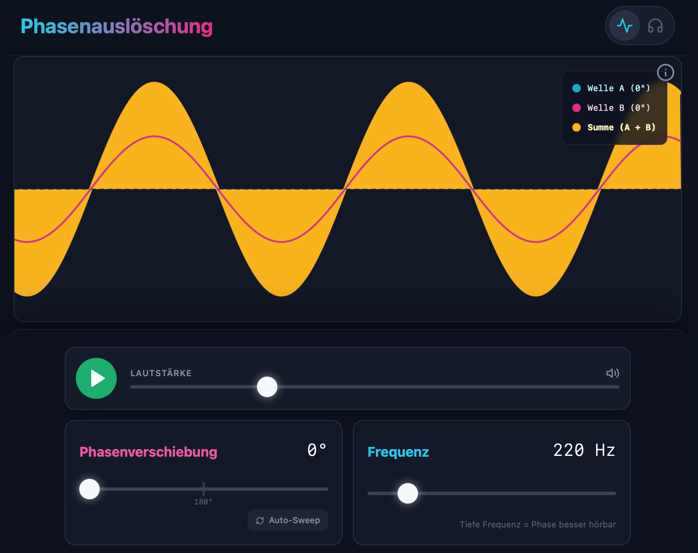
Phasenauslöschung
Wie funktioniert Active Noise Cancelling?
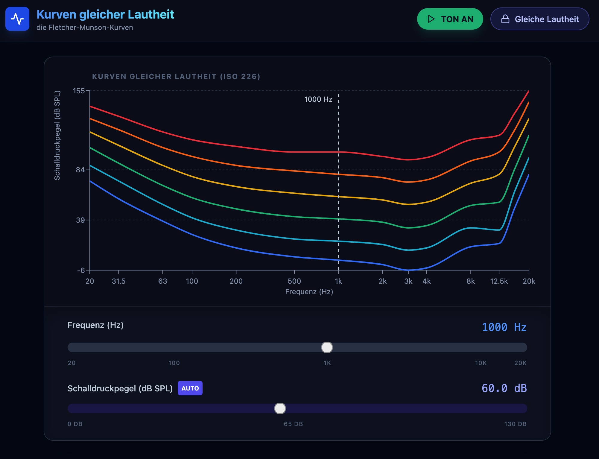
Kurven gleicher Lautheit
Hören wir alle Frequenzen gleich laut?
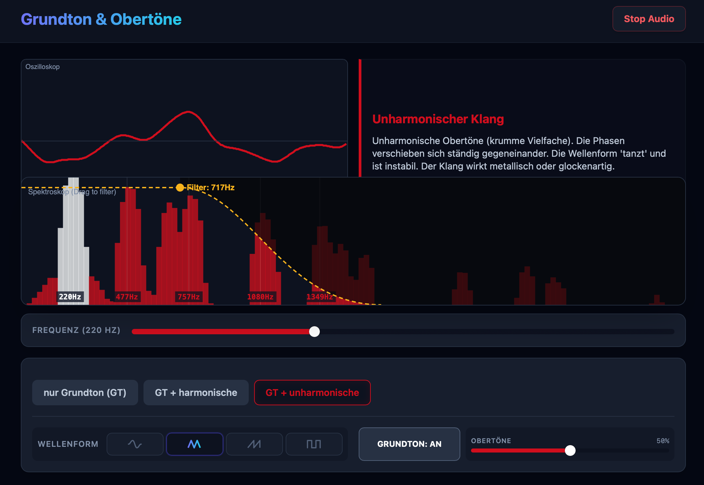
Grundton & Obertöne
Wie beeinflussen sie die Klangfarbe?

ADSR Hüllkurve
Schallverlauf? Probier es am Synthesizer aus!
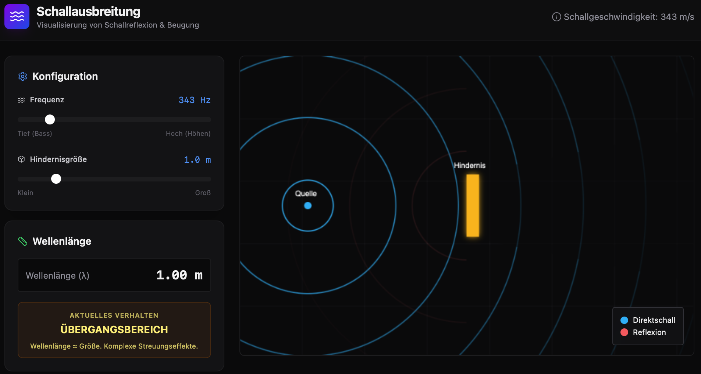
Schallausbreitung
Wann wird eine Schallwelle gebeugt und wann reflektiert?
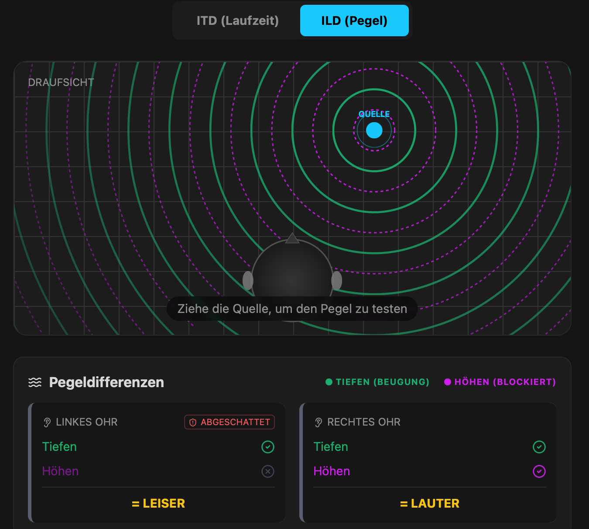
Schalllokalisation
Warum wir Schall aus allen Richtungen orten können
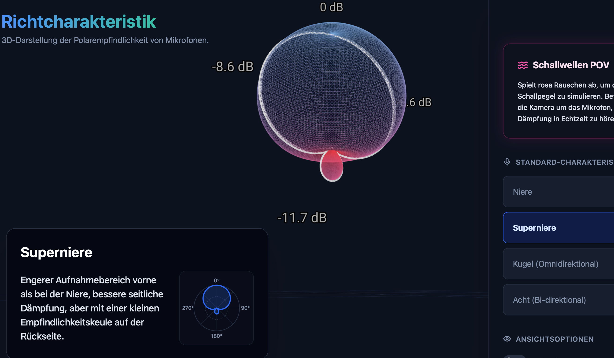
Richtcharakteristik
Wie gut empfangen Mikrofone Schall aus verschiedenen Richtungen?

Analoges Mischpult
AUX-Sends, Routing, PFL & Signalflussdiagramm ausprobieren!
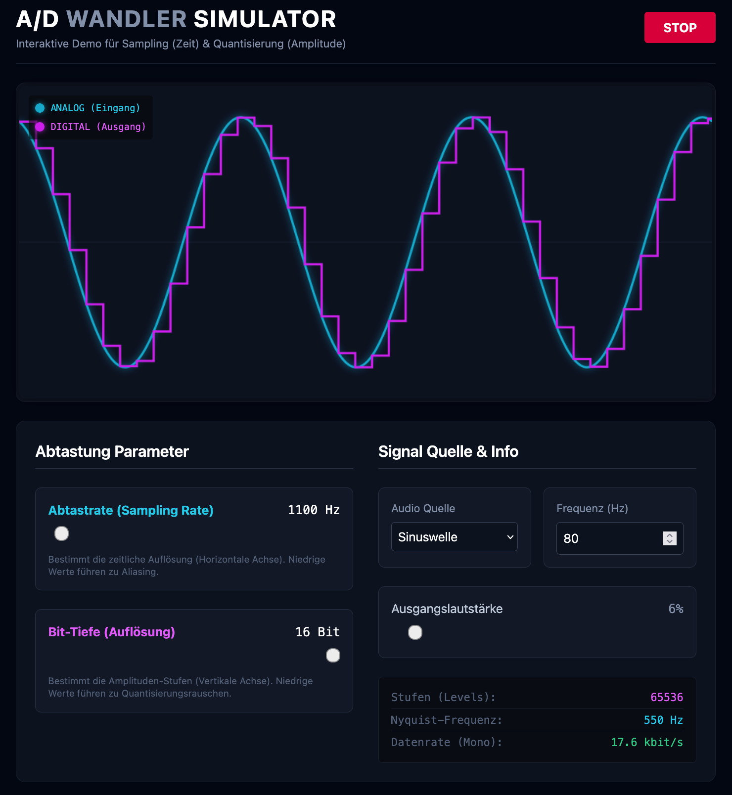
A/D-Wandlung
Sampling und Quantisierung von Audio bei der Wandlung von analog zu digital

Digitales Mischpult
Encoder, Ebenen, EQ & Busse ausprobieren!
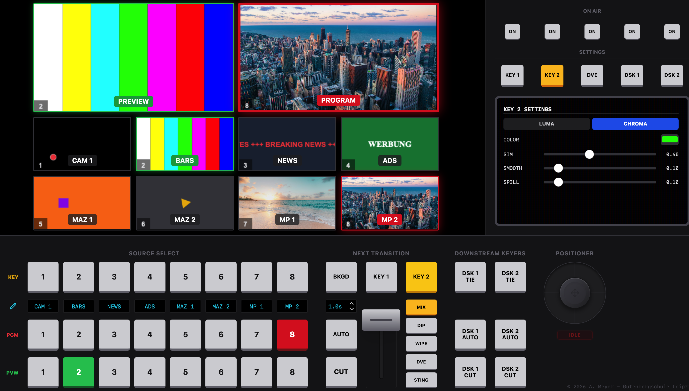
Bildmischer
Transitions, Keys & DVE direkt ausprobieren, auch mit eigenen Quellen
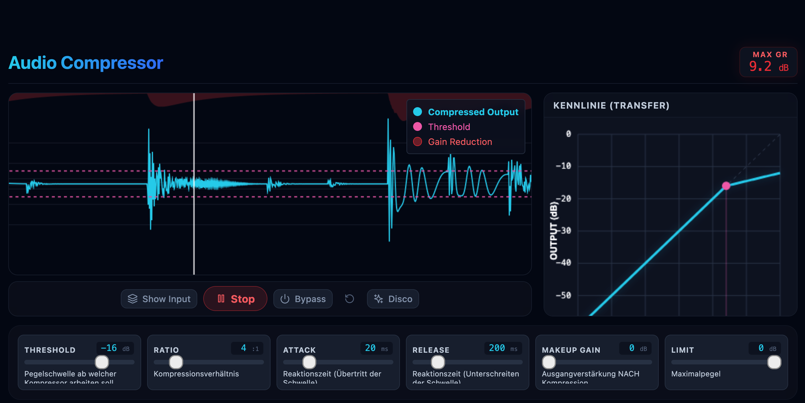
Audio Kompressor
Dynamikbearbeitung von Audiomaterial ausprobieren
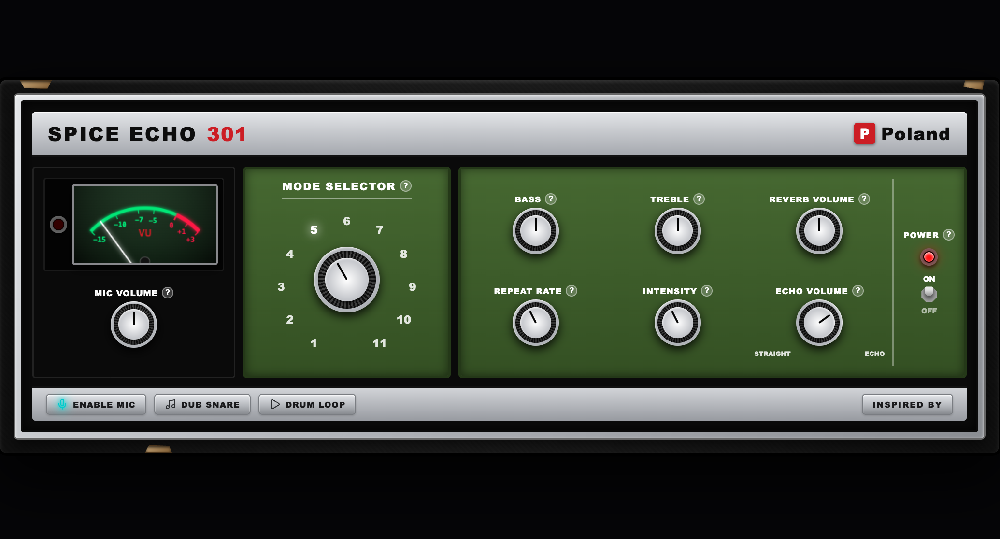
Vintage Tape Delay
Ein legendäres Band-Echo direkt testen

Parametrischer EQ
Den Frequenzgang von Rauschen mit einem 3-Band-Eqalizer manipulieren
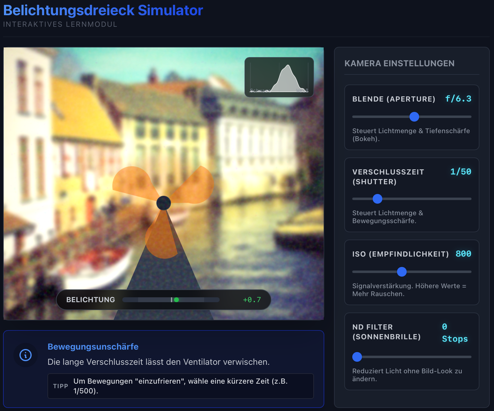
Belichtungsdreieck
Zusammenhang von Blende, Shutter, ISO (und ND-Filtern) verstehen
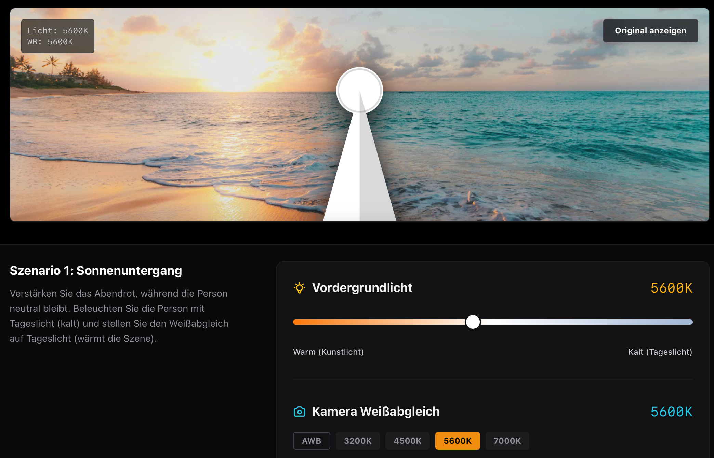
WhiteBalanceSim
Wie hängen die Lichtfarbtemperatur und der Kameraweißabgleich zusammen?
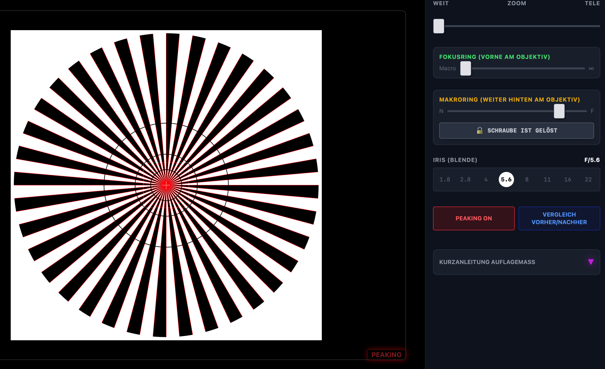
Auflagemaß
Knackscharf über den gesamten Zoombereich? Nur mit korrektem Auflagemaß.